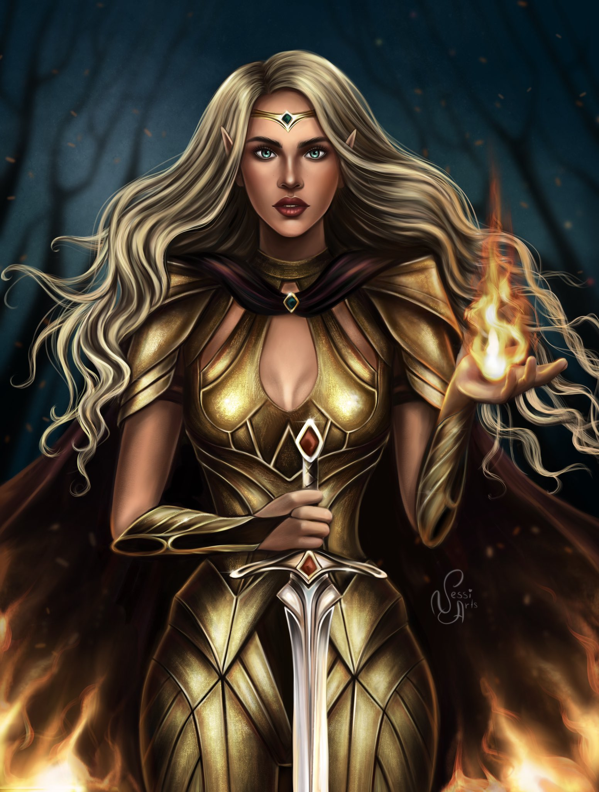
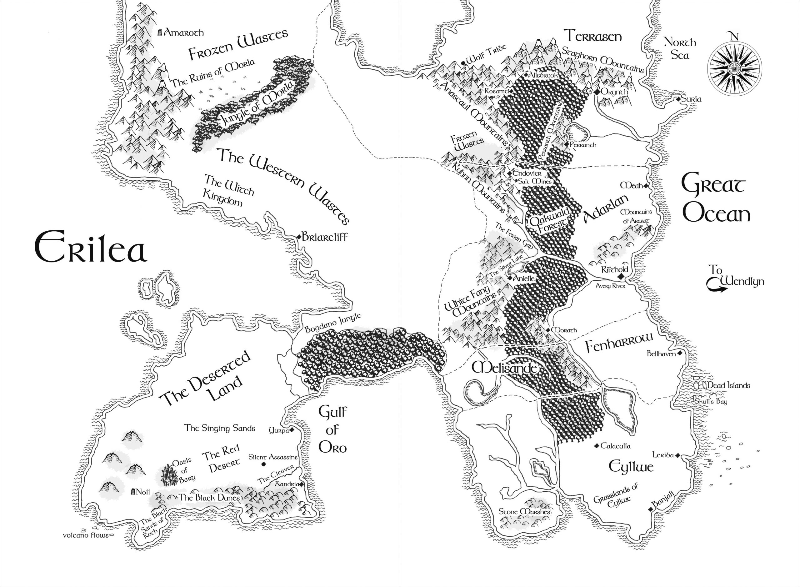

Throne Of Glass - Üvegtrón sorozat
- 0,1-0,5. - The Assassin's Blade - Az orgyilkos pengéje és más történetek
- 1. - Throne of Glass - Üvegtrón
- 2. - Crown of Midnight - Éjkorona
- 3. - Heir of Fire - A tűz örököse
- 4. - Queen of Shadows - Árnyak királynője
- 5. - Empire of Storms - Viharok birodalma
- 6. - Tower of Dawn - A hajnal tornya
- 7. - Kingdom of Ash 1-2 - Felperzselt királyság 1-2
Az ismert világ leghíresebb orgyilkosa. Celaena Sardothien gyönyörű és halálos. A sors nagy dolgokat tartogat a lenyűgöző, ifjú nő számára. Távolvég sötét, nyomorúsággal teli sóbányáinak mélyén egy megviselt,tizennyolc éves lány robotol a rabszolgák között. Életfogytiglanig tartó kényszermunkára ítélték. Hiába képezték ki a földrész legjobb orgyilkosai. Hiába lett a halálos mesterség leghíresebb művésze. Elkövetett egy végzetes hibát. Elfogták. A kegyetlen börtönbe egy napon különös látogató érkezik. Az ifjú és felettébb jóképű Westfall kapitány meglepő ajánlatot tesz a rettegett orgyilkosnak. Szabad lehet, ha előtte végrehajt egy hihetetlenül vakmerő és elképesztően nehéz feladatot. Az ország koronahercege bajnokot akar küldeni az apja halálos versenyére. Csatasorba állnak a birodalom legtehetségesebb tolvajai és legkönyörtelenebb harcosai. A küzdelem tétje az életben maradás. Ha győz, Celaena visszanyeri a szabadságát. Függetlenül attól, hogy képes lesz-e megnyerni a kegyetlen versengést, megrázó felfedezés vár az ifjú hölgyre. Már csupán az a nagy kérdés, hogy meglágyulhat-e egy orgyilkos kőszíve.
Sarah mindig nagyon erős női karakterek ír. És itt nem feltétlenül a fizikai erőre gondolok, hanem olyan nőkre, akik okosak, kitartanak az álmaikért, és sosem adják fel. Cealena is egy ilyen karakter. Érdekes tény, hogy mikor a sorozat első részét, az Üvegtrónt írta, Sarah még csak 16 éves volt.

– Adarlan koronahercege vagyok – mordult fel az ifjú, és leült a
tűzhely mellett álló székre. – Sohasem tréfálkozom.
– Szabad egyáltalán itt lennie?
– Mi az, hogy szabad-e? Mondom, herceg vagyok. Azt teszem, amit
akarok.
– Ez igaz. Csakhogy én meg Adarlan orgyilkosa vagyok.
Üvegtrón
A félelem már jó ideje elkerülte. Egyszerűen nem hagyta, hogy féljen.
Amikor reggelente felébredt, újra és újra ugyanazt a mondatot
ismételte el magának: nem fogok félni! Egy hosszú esztendőn keresztül
ezeknek a szavaknak köszönhette azt, hogy nem tört meg, és nem hajtott
fejet. Így volt képes megőrizni az elméjének az épségét a sóbánya
sötét mélységében.
Üvegtrón - 11. oldal
Erilea térképe:
